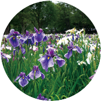

|  | |||||
| 花 | 家庭菜園 | 観葉植物 | 多肉植物 | 園芸用品 | 肥料 |
パーソナル植物診断
お知らせ
2023.09.25
お知らせ1---------------------------
2023.09.25
お知らせ2---------------------------
2023.09.25
お知らせ3---------------------------
このサイトについて
花と共に彩る、
あなたの生活の一部
植物の育て方、季節のアドバイス、デザインのヒントを提供し、
あなたの生活に自然の美しさを取り入れるお手伝いをします。
庭園があなたの心に豊かさをもたらします。